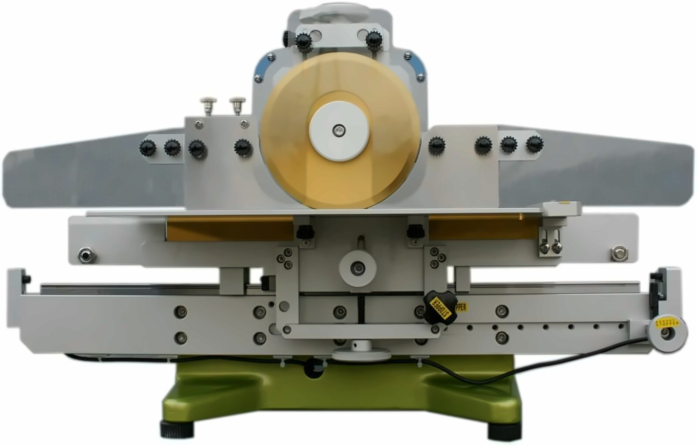

当社の製品は主要な部品の精度を徹底的に追求し、低ストレスで基板を分割することを実現しています。モーター駆動での切削カットではないので環境に優しく、コストもかかりません。
上刃と下刃を交差させないことに重点を置いた設計。ハサミのような「ねじれ・ひねり」が発生せず、実装部品へのストレスを根本から低減します。
FR4・CEM3・紙フェノール・アルミ・銅など多種の基板素材を1台でカット可能。デジタルカウント計・上刃基板送りモーターなどオプションも充実しています。
安全対策を万全に設計。オペレーターが安心して使用できる機構を採用。3〜4秒/カットの効率的な作業性と高い安全性を両立しています。
長野県小諸市に拠点を置くVELX株式会社が国内サポートを担当。機種選定から導入後のフォローアップまで、日本語で丁寧に対応します。

基板を下側直線刃で固定するため、刃先の横揺れなく安定し、高精度で上下刃の交差なく少ない力できれいな断面のカットを実現します。
基板全体を下刃で支えるため、中抜き基板でも刃が逸れる心配がありません。横方向へのストレス拡散を防ぎます。
ローラー刃が浅い角度で自転しながら進行前後の繊維を少しずつ圧切。円周が大きいほど抵抗が軽くなる原理で、スムーズなカットを実現。
カット時の基板左右バランスを取ることが最重要ポイント。基板に余分な力を加えないオペレーション設計になっています。
チップ積層セラミックコンデンサなどを実装する近年の基板は、素材もV溝の形状も多様化しており、部品も鉛フリー化で脆くなっています。基板実装後に機械的ストレスで基板がたわむと、下記のようなクラックが生じます。
基板ブレイク等で基板がたわんだ場合、図のようなクラックが生じます。クラックは、はんだの盛り量が多いほど生じやすくなります。
チップ部品の端子部（はんだフィレットの根元）に応力が集中し、部品内部へ斜めにクラックが進行します。目視では確認しにくく、後工程・市場での不具合の原因になります。
実装基板スプリッターのリニアスライス方式は、基板を下側直線刃で固定するため刃先の横揺れがなく安定し、上下刃を交差させずに少ない力できれいな断面のカットができます。
安定切断の理由は、ローラー刃が浅い角度で自転しながら、進行の前後で繊維を少しずつ圧切していくことにあります。横方向にストレスが広がりにくい方式で、円周が大きいほど抵抗は軽くなります。下刃で基板全体を支えるため、中抜き基板でも基板から刃が逸れる心配がありません。
基板の分割には、上で紹介したように最終分割に至るまでに様々なストレス要因があります。手割りや工具によるストレスの軽減を目的に分割機の精度を高めてきましたが、基板材質の変化や部品の高密度化が進むなか、分割機と刃の精度はもちろん、基板側のV溝仕様も重要な要因です。シンプルなカット方式で、冶具などで基板を押さえつけないこと、機械の精度、V溝の精度によって、部品にかかるストレスは軽減できます。V溝の良否条件はひずみの検証のページをご覧ください。